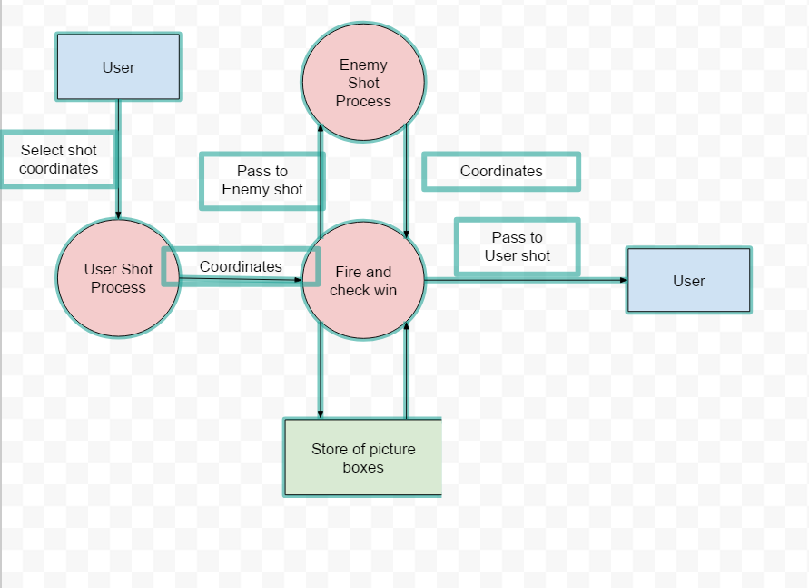
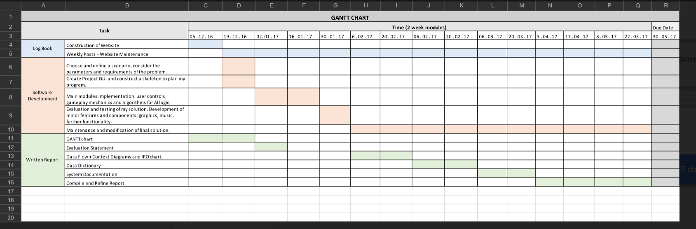

The next stage in the written report is creating the data flow diagram – an extension of the context diagram which uses 1 data source, three processes and 2 entities. However, I feel I haven’t fully or adequately describe the entire system, I hope to work on better defining the data sources and their interaction with each entity. Also, I feel linking the processes together is counter intuitive and could be implied as a single process. I am still aware of the need to implement a user guide in my project which is something I am unsure how I should complete. Message boxes seem and inadequate solution for the amount information needed to be contained so. As a result, I hope to find some control which allows the use of pdf files.

GANTT chart
Post by Jonah Smith, Feb 13, 2017.
Although I have already made considerable progress on my project I will make a GANTT chart which reflects the time limits I have attempted to follow – with some unsuccessful deadlines and hope to continue to follow. I somewhat underestimated the time fully needed to create thorough and meaningful documentation for the project however I am still in a good position to complete the project comfortably.

Context Diagram
Post by Jonah Smith, Feb 06, 2017.
I have started to work more thoroughly on theory components now that the majority of the programming has been completed. I designed a context diagram and used the fire process to encompass the entire system – its users and interactions are limited to two entities. The user which input and reviews information as well as a ships data source sink. The next stage will to be create a GANNT chart depicting my best course of action and time restrictions for the rest of the project.